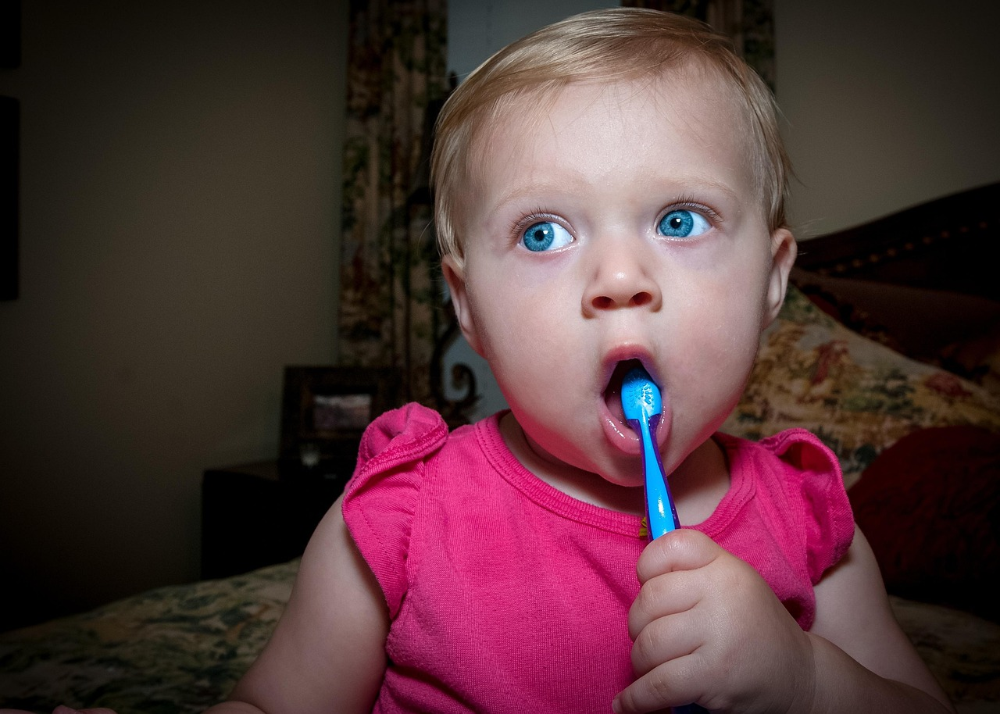
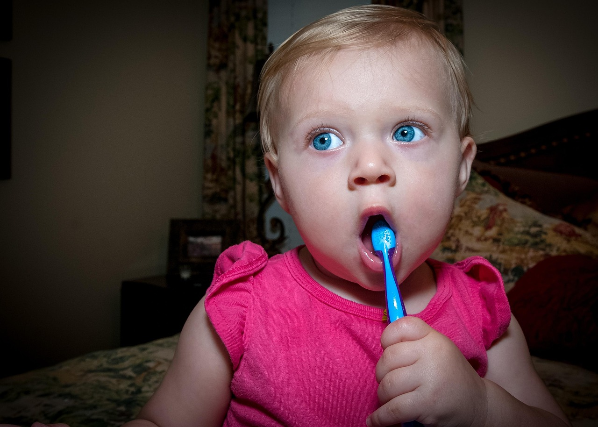

Odontología pediátrica
En Sonrisa Perfecta entendemos que la salud bucal en la infancia es la base de una sonrisa sana y duradera. Por eso, nuestro servicio de odontología pediátrica está diseñado para ofrecer una atención especializada, amable y divertida a los más pequeños. Nuestro equipo cuenta con odontopediatras experimentados, formados para atender a niños desde sus primeros años de vida, creando un ambiente tranquilo y de confianza que convierte cada visita al dentista en una experiencia positiva. Durante las revisiones, realizamos controles de crecimiento dental, enseñamos técnicas de cepillado adecuadas y fomentamos hábitos saludables que ayudarán a prevenir caries y otros problemas dentales.
Entre nuestros tratamientos más frecuentes se incluyen:
🦷 Limpiezas y revisiones periódicas.
🦷 Selladores dentales y aplicación de flúor para prevenir la caries.
🦷 Tratamientos de caries en dientes temporales.
🦷 Control y orientación sobre la erupción de los dientes permanentes.
🦷 Ortodoncia preventiva y funcional en niños y adolescentes.
Además, damos gran importancia a la educación dental infantil: enseñamos a los niños (y a sus padres) cómo cuidar su boca de forma divertida y efectiva. Sabemos que un niño que aprende a cuidar sus dientes será un adulto con una sonrisa sana. Nuestro objetivo es que cada pequeño paciente salga de la consulta con una sonrisa feliz, sin miedo al dentista y con ganas de volver.
 
